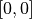
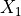
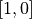
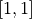
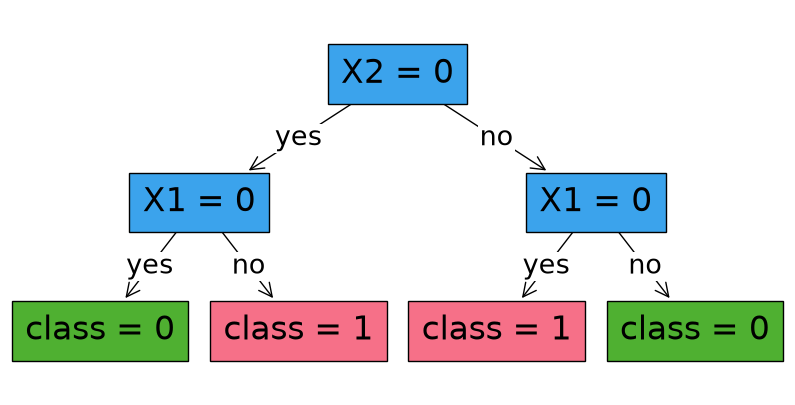
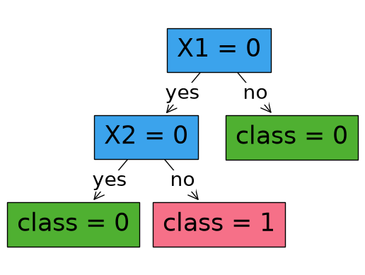
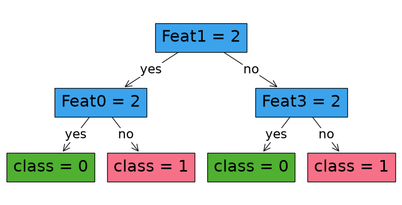
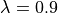
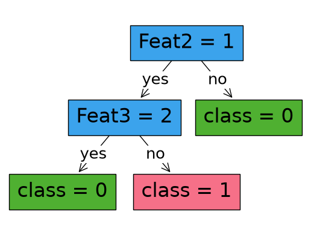

[1]:
import numpy as np
import pandas as pd
import matplotlib.pyplot as plt
from sklearn.model_selection import train_test_split
from sklearn.metrics import accuracy_score
from math import log
from copy import deepcopy
from odtlearn.datasets import robust_example
from odtlearn.robust_oct import RobustOCT
RobustOCT Examples¶
Example 1: Synthetic Data Without Specified Shifts¶
If costs and/or budget is not specified, then we will produce the same result as an optimal strong classification tree.
As an example, say that we are given this training set:
[2]:
"""
X2
| |
| |
1 + + | -
| |
|---------------|-------------
| |
0 - - - - | + + +
| - - - |
|______0________|_______1_______X1
"""
X = np.array(
[
[0, 0],
[0, 0],
[0, 0],
[0, 0],
[0, 0],
[0, 0],
[0, 0],
[1, 0],
[1, 0],
[1, 0],
[1, 1],
[0, 1],
[0, 1],
]
)
X = pd.DataFrame(X, columns=["X1", "X2"])
y = np.array([0, 0, 0, 0, 0, 0, 0, 1, 1, 1, 0, 1, 1])
If either costs or budget is not specified, the optimal classification tree will be produced (i.e., a tree that does not account for distribution shifts).
[3]:
robust_classifier = RobustOCT(
solver="gurobi",
depth = 2,
time_limit = 100,
)
robust_classifier.fit(X, y)
predictions = robust_classifier.predict(X)
Restricted license - for non-production use only - expires 2027-11-29
Set parameter TimeLimit to value 100
Set parameter LazyConstraints to value 1
Gurobi Optimizer version 13.0.2 build v13.0.2rc1 (linux64 - "Ubuntu 24.04.4 LTS")
CPU model: AMD EPYC 9V74 80-Core Processor, instruction set [SSE2|AVX|AVX2]
Thread count: 2 physical cores, 4 logical processors, using up to 4 threads
Non-default parameters:
TimeLimit 100
LazyConstraints 1
Optimize a model with 7 rows, 33 columns and 20 nonzeros (Max)
Model fingerprint: 0x78ba3dea
Model has 19 linear objective coefficients
Variable types: 13 continuous, 20 integer (20 binary)
Coefficient statistics:
Matrix range [1e+00, 1e+00]
Objective range [2e-01, 1e+00]
Bounds range [1e+00, 1e+00]
RHS range [1e+00, 1e+00]
Presolve removed 4 rows and 4 columns
Presolve time: 0.00s
Presolved: 3 rows, 29 columns, 12 nonzeros
Variable types: 13 continuous, 16 integer (16 binary)
Root relaxation: objective 1.300000e+01, 5 iterations, 0.00 seconds (0.00 work units)
Nodes | Current Node | Objective Bounds | Work
Expl Unexpl | Obj Depth IntInf | Incumbent BestBd Gap | It/Node Time
0 0 13.00000 0 - - 13.00000 - - 0s
0 0 12.75000 0 - - 12.75000 - - 0s
0 0 12.75000 0 - - 12.75000 - - 0s
0 0 12.50000 0 6 - 12.50000 - - 0s
H 0 0 7.2500000 12.50000 72.4% - 0s
H 0 0 9.2500000 12.50000 35.1% - 0s
H 0 0 10.2500000 12.50000 22.0% - 0s
H 0 0 12.2500000 12.50000 2.04% - 0s
0 0 12.50000 0 6 12.25000 12.50000 2.04% - 0s
0 0 cutoff 0 12.25000 12.25000 0.00% - 0s
Cutting planes:
Gomory: 1
MIR: 1
Explored 1 nodes (15 simplex iterations) in 0.04 seconds (0.00 work units)
Thread count was 4 (of 4 available processors)
Solution count 4: 12.25 10.25 9.25 7.25
Optimal solution found (tolerance 1.00e-04)
Best objective 1.225000000000e+01, best bound 1.225000000000e+01, gap 0.0000%
User-callback calls 164, time in user-callback 0.03 sec
[4]:
robust_classifier.print_tree()
#########node 1
Feature: X2 , Cutoff: 0
#########node 2
Feature: X1 , Cutoff: 0
#########node 3
Feature: X1 , Cutoff: 0
#########node 4
leaf 0
#########node 5
leaf 1
#########node 6
leaf 1
#########node 7
leaf 0
[5]:
fig, ax = plt.subplots(figsize=(10, 5))
robust_classifier.plot_tree()
plt.show()

Example 2: synthetic data with specified shifts¶
We take the same synthetic data from Example 1, but now add distribution shifts with the following schema:
For 5 samples at

, pay a cost of 1 to perturb
and get
For the 1 sample at

, pay a cost of 1 to perturb to get
to get All other perturbations are not allowed
First, define these costs, which have the same shape and features as your input sample.
[6]:
# Note: 10 is a proxy for infinite cost, as it is over the allowed budgets we will specify
costs = np.array([[1,10],[1,10],[1,10],[1,10],[1,10],[10,10],[10,10],
[10,10],[10,10],[10,10],
[10,1],
[10,10],[10,10]])
costs = pd.DataFrame(costs, columns=['X1', 'X2'])
When the budget is 2 (corresponding to the variable ε), we don’t see a change in the tree from Example 1 since for this dataset, the budget is small and thus the level of robustness is small.
[7]:
# Same data as Example 1
X = np.array(
[
[0, 0],
[0, 0],
[0, 0],
[0, 0],
[0, 0],
[0, 0],
[0, 0],
[1, 0],
[1, 0],
[1, 0],
[1, 1],
[0, 1],
[0, 1],
]
)
X = pd.DataFrame(X, columns=["X1", "X2"])
y = np.array([0, 0, 0, 0, 0, 0, 0, 1, 1, 1, 0, 1, 1])
[8]:
robust_classifier = RobustOCT(
solver="gurobi",
depth=2,
time_limit=100
)
robust_classifier.fit(X, y, costs=costs, budget=2)
predictions = robust_classifier.predict(X)
Set parameter TimeLimit to value 100
Set parameter LazyConstraints to value 1
Gurobi Optimizer version 13.0.2 build v13.0.2rc1 (linux64 - "Ubuntu 24.04.4 LTS")
CPU model: AMD EPYC 9V74 80-Core Processor, instruction set [SSE2|AVX|AVX2]
Thread count: 2 physical cores, 4 logical processors, using up to 4 threads
Non-default parameters:
TimeLimit 100
LazyConstraints 1
Optimize a model with 7 rows, 33 columns and 20 nonzeros (Max)
Model fingerprint: 0x78ba3dea
Model has 19 linear objective coefficients
Variable types: 13 continuous, 20 integer (20 binary)
Coefficient statistics:
Matrix range [1e+00, 1e+00]
Objective range [2e-01, 1e+00]
Bounds range [1e+00, 1e+00]
RHS range [1e+00, 1e+00]
Presolve removed 4 rows and 4 columns
Presolve time: 0.00s
Presolved: 3 rows, 29 columns, 12 nonzeros
Variable types: 13 continuous, 16 integer (16 binary)
Root relaxation: objective 1.300000e+01, 5 iterations, 0.00 seconds (0.00 work units)
Nodes | Current Node | Objective Bounds | Work
Expl Unexpl | Obj Depth IntInf | Incumbent BestBd Gap | It/Node Time
0 0 13.00000 0 - - 13.00000 - - 0s
0 0 12.75000 0 - - 12.75000 - - 0s
0 0 12.75000 0 - - 12.75000 - - 0s
0 0 12.50000 0 6 - 12.50000 - - 0s
H 0 0 7.2500000 12.50000 72.4% - 0s
H 0 0 9.2500000 12.50000 35.1% - 0s
H 0 0 10.2500000 12.50000 22.0% - 0s
0 0 12.50000 0 6 10.25000 12.50000 22.0% - 0s
0 0 12.25000 0 - 10.25000 12.25000 19.5% - 0s
0 0 12.25000 0 6 10.25000 12.25000 19.5% - 0s
0 0 12.22477 0 8 10.25000 12.22477 19.3% - 0s
0 0 12.18964 0 8 10.25000 12.18964 18.9% - 0s
0 0 12.18964 0 8 10.25000 12.18964 18.9% - 0s
0 0 12.18964 0 8 10.25000 12.18964 18.9% - 0s
0 0 12.18964 0 8 10.25000 12.18964 18.9% - 0s
0 0 12.18964 0 8 10.25000 12.18964 18.9% - 0s
0 2 12.18964 0 8 10.25000 12.18964 18.9% - 0s
Cutting planes:
Gomory: 1
MIR: 1
RLT: 2
Explored 45 nodes (215 simplex iterations) in 0.08 seconds (0.01 work units)
Thread count was 4 (of 4 available processors)
Solution count 3: 10.25 9.25 7.25
Optimal solution found (tolerance 1.00e-04)
Best objective 1.025000000000e+01, best bound 1.025000000000e+01, gap 0.0000%
User-callback calls 297, time in user-callback 0.05 sec
[9]:
robust_classifier.print_tree()
#########node 1
Feature: X2 , Cutoff: 0
#########node 2
Feature: X1 , Cutoff: 0
#########node 3
Feature: X1 , Cutoff: 0
#########node 4
leaf 0
#########node 5
leaf 1
#########node 6
leaf 1
#########node 7
leaf 0
[10]:
fig, ax = plt.subplots(figsize=(10, 5))
robust_classifier.plot_tree()
plt.show()

But when the budget is increased to 5 (adding more robustness), we see a change in the tree.
[11]:
robust_classifier = RobustOCT(
solver="gurobi",
depth=2,
time_limit=100
)
robust_classifier.fit(X, y, costs=costs, budget=5)
predictions = robust_classifier.predict(X)
Set parameter TimeLimit to value 100
Set parameter LazyConstraints to value 1
Gurobi Optimizer version 13.0.2 build v13.0.2rc1 (linux64 - "Ubuntu 24.04.4 LTS")
CPU model: AMD EPYC 9V74 80-Core Processor, instruction set [SSE2|AVX|AVX2]
Thread count: 2 physical cores, 4 logical processors, using up to 4 threads
Non-default parameters:
TimeLimit 100
LazyConstraints 1
Optimize a model with 7 rows, 33 columns and 20 nonzeros (Max)
Model fingerprint: 0x78ba3dea
Model has 19 linear objective coefficients
Variable types: 13 continuous, 20 integer (20 binary)
Coefficient statistics:
Matrix range [1e+00, 1e+00]
Objective range [2e-01, 1e+00]
Bounds range [1e+00, 1e+00]
RHS range [1e+00, 1e+00]
Presolve removed 4 rows and 4 columns
Presolve time: 0.00s
Presolved: 3 rows, 29 columns, 12 nonzeros
Variable types: 13 continuous, 16 integer (16 binary)
Root relaxation: objective 1.300000e+01, 5 iterations, 0.00 seconds (0.00 work units)
Nodes | Current Node | Objective Bounds | Work
Expl Unexpl | Obj Depth IntInf | Incumbent BestBd Gap | It/Node Time
0 0 13.00000 0 - - 13.00000 - - 0s
0 0 12.75000 0 - - 12.75000 - - 0s
0 0 12.75000 0 - - 12.75000 - - 0s
0 0 12.50000 0 6 - 12.50000 - - 0s
H 0 0 7.2500000 12.50000 72.4% - 0s
H 0 0 9.2500000 12.50000 35.1% - 0s
0 0 12.50000 0 6 9.25000 12.50000 35.1% - 0s
0 0 12.25000 0 - 9.25000 12.25000 32.4% - 0s
0 0 12.25000 0 6 9.25000 12.25000 32.4% - 0s
0 0 12.25000 0 6 9.25000 12.25000 32.4% - 0s
0 0 12.25000 0 6 9.25000 12.25000 32.4% - 0s
0 2 12.25000 0 6 9.25000 12.25000 32.4% - 0s
* 48 0 5 9.5000000 10.43333 9.82% 4.5 0s
Cutting planes:
Gomory: 1
MIR: 1
Explored 54 nodes (266 simplex iterations) in 0.17 seconds (0.00 work units)
Thread count was 4 (of 4 available processors)
Solution count 3: 9.5 9.25 7.25
Optimal solution found (tolerance 1.00e-04)
Best objective 9.500000000000e+00, best bound 9.500000000000e+00, gap 0.0000%
User-callback calls 297, time in user-callback 0.14 sec
[12]:
robust_classifier.print_tree()
#########node 1
Feature: X1 , Cutoff: 0
#########node 2
Feature: X2 , Cutoff: 0
#########node 3
leaf 0
#########node 4
leaf 0
#########node 5
leaf 1
#########node 6
pruned
#########node 7
pruned
[13]:
robust_classifier.plot_tree()
plt.show()

Example 3: UCI data example¶
Here, we’ll see the benefits of using robust optimization by perturbing the test set. We will use the MONK’s Problems dataset from the UCI Machine Learning Repository.
Fetch data and split to train and test
[14]:
"""Fetch data and split to train and test"""
data, y = robust_example()
X_train, X_test, y_train, y_test = train_test_split(
data, y, test_size=0.25, random_state=2
)
For sake of comparison, train a classification tree that does not consider the scenario where there is a distribution shift:
[15]:
"""Train a non-robust tree for comparison"""
# If you define no uncertainty, you get an optimal tree without regularization that maximizes accuracy
non_robust_classifier = RobustOCT(solver="gurobi", depth=2, time_limit=300)
non_robust_classifier.fit(X_train, y_train)
Set parameter TimeLimit to value 300
Set parameter LazyConstraints to value 1
Gurobi Optimizer version 13.0.2 build v13.0.2rc1 (linux64 - "Ubuntu 24.04.4 LTS")
CPU model: AMD EPYC 9V74 80-Core Processor, instruction set [SSE2|AVX|AVX2]
Thread count: 2 physical cores, 4 logical processors, using up to 4 threads
Non-default parameters:
TimeLimit 300
LazyConstraints 1
Optimize a model with 7 rows, 173 columns and 47 nonzeros (Max)
Model fingerprint: 0xafd32360
Model has 159 linear objective coefficients
Variable types: 126 continuous, 47 integer (47 binary)
Coefficient statistics:
Matrix range [1e+00, 1e+00]
Objective range [2e-01, 1e+00]
Bounds range [1e+00, 1e+00]
RHS range [1e+00, 1e+00]
Presolve removed 4 rows and 4 columns
Presolve time: 0.00s
Presolved: 3 rows, 169 columns, 39 nonzeros
Variable types: 126 continuous, 43 integer (43 binary)
Root relaxation: objective 1.260000e+02, 5 iterations, 0.00 seconds (0.00 work units)
Nodes | Current Node | Objective Bounds | Work
Expl Unexpl | Obj Depth IntInf | Incumbent BestBd Gap | It/Node Time
0 0 126.00000 0 - - 126.00000 - - 0s
0 0 125.75000 0 - - 125.75000 - - 0s
0 0 125.75000 0 7 - 125.75000 - - 0s
H 0 0 77.2500000 125.75000 62.8% - 0s
H 0 0 78.0000000 125.75000 61.2% - 0s
0 0 125.55000 0 13 78.00000 125.55000 61.0% - 0s
0 0 125.43182 0 18 78.00000 125.43182 60.8% - 0s
0 0 125.31818 0 22 78.00000 125.31818 60.7% - 0s
0 0 125.29167 0 22 78.00000 125.29167 60.6% - 0s
0 0 125.29167 0 22 78.00000 125.29167 60.6% - 0s
0 2 125.29167 0 22 78.00000 125.29167 60.6% - 0s
* 283 205 18 78.2500000 122.25000 56.2% 25.9 1s
H 344 244 80.2500000 122.25000 52.3% 27.2 2s
* 351 241 27 80.5000000 122.25000 51.9% 26.9 2s
* 489 297 21 81.2500000 118.83333 46.3% 25.2 2s
* 513 310 23 81.5000000 118.82895 45.8% 25.0 2s
* 692 358 15 82.2500000 114.87500 39.7% 24.7 2s
* 819 368 16 82.5000000 112.95000 36.9% 25.1 2s
* 1182 461 15 83.2500000 105.94444 27.3% 22.7 2s
Cutting planes:
Gomory: 3
MIR: 1
Flow cover: 39
RLT: 1
Explored 5449 nodes (101910 simplex iterations) in 4.91 seconds (4.02 work units)
Thread count was 4 (of 4 available processors)
Solution count 10: 83.25 82.5 82.25 ... 77.25
Optimal solution found (tolerance 1.00e-04)
Best objective 8.325000000000e+01, best bound 8.325000000000e+01, gap 0.0000%
User-callback calls 11562, time in user-callback 2.29 sec
[15]:
RobustOCT(solver=gurobi,depth=2,time_limit=300,num_threads=None,verbose=False)
[16]:
non_robust_classifier.print_tree()
#########node 1
Feature: Feat1 , Cutoff: 2
#########node 2
Feature: Feat0 , Cutoff: 2
#########node 3
Feature: Feat3 , Cutoff: 2
#########node 4
leaf 0
#########node 5
leaf 1
#########node 6
leaf 0
#########node 7
leaf 1
[17]:
fig, ax = plt.subplots(figsize=(10, 5))
non_robust_classifier.plot_tree()
plt.show()

Train a robust tree. First, define the uncertainty. Here, we will generate a probability of certainty for each feature randomly (in practice, you would need to use some guess from domain knowledge). For simplicity, we will not change this probability by data sample  . We also define
. We also define

, which in practice must be tuned.[18]:
"""Generate q_f values for each feature (i.e. probability of certainty for feature f)"""
np.random.seed(42)
q_f = np.random.normal(loc=0.9, scale=0.1, size=len(X_train.columns))
# Snap q_f to range [0,1]
q_f[q_f <= 0] = np.nextafter(np.float32(0), np.float32(1))
q_f[q_f > 1] = 1.0
q_f
[18]:
array([0.94967142, 0.88617357, 0.96476885, 1. , 0.87658466,
0.8765863 ])
Calibrate the costs and budget parameters for the fit function.
[19]:
"""Define budget of uncertainty"""
l = 0.9 # Lambda value between 0 and 1
budget = -1 * X_train.shape[0] * log(l)
budget
[19]:
13.275424972886112
[20]:
"""Based on q_f values, create costs of uncertainty"""
costs = deepcopy(X_train)
costs = costs.astype("float")
for f in range(len(q_f)):
if q_f[f] == 1:
costs[costs.columns[f]] = budget + 1 # no uncertainty = "infinite" cost
else:
costs[costs.columns[f]] = -1 * log(1 - q_f[f])
costs
[20]:
| Feat0 | Feat1 | Feat2 | Feat3 | Feat4 | Feat5 | |
|---|---|---|---|---|---|---|
| 0 | 2.989182 | 2.173081 | 3.345825 | 14.275425 | 2.0922 | 2.092213 |
| 1 | 2.989182 | 2.173081 | 3.345825 | 14.275425 | 2.0922 | 2.092213 |
| 2 | 2.989182 | 2.173081 | 3.345825 | 14.275425 | 2.0922 | 2.092213 |
| 3 | 2.989182 | 2.173081 | 3.345825 | 14.275425 | 2.0922 | 2.092213 |
| 4 | 2.989182 | 2.173081 | 3.345825 | 14.275425 | 2.0922 | 2.092213 |
| ... | ... | ... | ... | ... | ... | ... |
| 121 | 2.989182 | 2.173081 | 3.345825 | 14.275425 | 2.0922 | 2.092213 |
| 122 | 2.989182 | 2.173081 | 3.345825 | 14.275425 | 2.0922 | 2.092213 |
| 123 | 2.989182 | 2.173081 | 3.345825 | 14.275425 | 2.0922 | 2.092213 |
| 124 | 2.989182 | 2.173081 | 3.345825 | 14.275425 | 2.0922 | 2.092213 |
| 125 | 2.989182 | 2.173081 | 3.345825 | 14.275425 | 2.0922 | 2.092213 |
126 rows × 6 columns
Train the robust tree using the costs and budget.
[21]:
robust_classifier = RobustOCT(
solver="gurobi",
depth=2,
time_limit=200,
)
robust_classifier.fit(X_train, y_train, costs=costs, budget=budget)
Set parameter TimeLimit to value 200
Set parameter LazyConstraints to value 1
Gurobi Optimizer version 13.0.2 build v13.0.2rc1 (linux64 - "Ubuntu 24.04.4 LTS")
CPU model: AMD EPYC 9V74 80-Core Processor, instruction set [SSE2|AVX|AVX2]
Thread count: 2 physical cores, 4 logical processors, using up to 4 threads
Non-default parameters:
TimeLimit 200
LazyConstraints 1
Optimize a model with 7 rows, 173 columns and 47 nonzeros (Max)
Model fingerprint: 0xafd32360
Model has 159 linear objective coefficients
Variable types: 126 continuous, 47 integer (47 binary)
Coefficient statistics:
Matrix range [1e+00, 1e+00]
Objective range [2e-01, 1e+00]
Bounds range [1e+00, 1e+00]
RHS range [1e+00, 1e+00]
Presolve removed 4 rows and 4 columns
Presolve time: 0.00s
Presolved: 3 rows, 169 columns, 39 nonzeros
Variable types: 126 continuous, 43 integer (43 binary)
Root relaxation: objective 1.260000e+02, 5 iterations, 0.00 seconds (0.00 work units)
Nodes | Current Node | Objective Bounds | Work
Expl Unexpl | Obj Depth IntInf | Incumbent BestBd Gap | It/Node Time
0 0 126.00000 0 - - 126.00000 - - 0s
0 0 125.75000 0 - - 125.75000 - - 0s
0 0 125.75000 0 7 - 125.75000 - - 0s
H 0 0 77.2500000 125.75000 62.8% - 0s
H 0 0 78.0000000 125.75000 61.2% - 0s
0 0 125.55000 0 13 78.00000 125.55000 61.0% - 0s
0 0 125.43182 0 18 78.00000 125.43182 60.8% - 0s
0 0 125.31818 0 22 78.00000 125.31818 60.7% - 0s
0 0 125.29167 0 22 78.00000 125.29167 60.6% - 0s
0 0 125.29167 0 20 78.00000 125.29167 60.6% - 0s
0 2 125.29167 0 20 78.00000 125.29167 60.6% - 0s
975 621 85.58333 12 5 78.00000 112.69697 44.5% 24.3 5s
H 1499 721 78.5000000 110.37500 40.6% 25.3 8s
H 1812 720 79.5000000 110.37500 38.8% 24.7 9s
1862 744 102.45000 19 17 79.50000 110.37500 38.8% 24.6 10s
3561 875 85.91667 35 6 79.50000 96.25000 21.1% 17.9 15s
5065 740 80.00000 32 4 79.50000 88.90000 11.8% 15.9 20s
6290 180 80.65000 31 2 79.50000 81.75000 2.83% 14.8 25s
Cutting planes:
MIR: 2
Flow cover: 54
RLT: 1
Explored 6743 nodes (95373 simplex iterations) in 27.26 seconds (7.34 work units)
Thread count was 4 (of 4 available processors)
Solution count 5: 79.5 78.5 78 ... 77.25
Optimal solution found (tolerance 1.00e-04)
Best objective 7.950000000000e+01, best bound 7.950000000000e+01, gap 0.0000%
User-callback calls 14876, time in user-callback 22.45 sec
[21]:
RobustOCT(solver=gurobi,depth=2,time_limit=200,num_threads=None,verbose=False)
[22]:
robust_classifier.print_tree()
#########node 1
Feature: Feat2 , Cutoff: 1
#########node 2
Feature: Feat3 , Cutoff: 2
#########node 3
leaf 0
#########node 4
leaf 0
#########node 5
leaf 1
#########node 6
pruned
#########node 7
pruned
[23]:
robust_classifier.plot_tree()
plt.show()

[24]:
print(
"Non-robust training accuracy: ",
accuracy_score(y_train, non_robust_classifier.predict(X_train)),
)
print(
"Robust training accuracy: ",
accuracy_score(y_train, robust_classifier.predict(X_train)),
)
print(
"Non-robust test accuracy: ",
accuracy_score(y_test, non_robust_classifier.predict(X_test)),
)
print(
"Robust test accuracy: ",
accuracy_score(y_test, robust_classifier.predict(X_test)),
)
Non-robust training accuracy: 0.6666666666666666
Robust training accuracy: 0.6587301587301587
Non-robust test accuracy: 0.46511627906976744
Robust test accuracy: 0.5581395348837209
To measure the performance of the trained models, perturb the test data based off of our known certainties of each feature (to simulate a distribtion shift), and then see how well each tree performs against the perturbed data
[25]:
def perturb(data, q_f, seed):
"""Perturb X given q_f based off of the symmetric geometric distribution"""
new_data = deepcopy(data)
np.random.seed(seed)
# Perturbation of features
for f in range(len(new_data.columns)):
perturbations = np.random.geometric(q_f[f], size=new_data.shape[0])
perturbations = perturbations - 1 # Support should be 0,1,2,...
signs = (2 * np.random.binomial(1, 0.5, size=new_data.shape[0])) - 1
perturbations = perturbations * signs
new_data[new_data.columns[f]] = new_data[new_data.columns[f]] + perturbations
return new_data
"""Obtain 1000 different perturbed test sets, and record accuracies"""
non_robust_acc = []
robust_acc = []
for s in range(1, 1001):
X_test_perturbed = perturb(X_test, q_f, s)
non_robust_pred = non_robust_classifier.predict(X_test_perturbed)
robust_pred = robust_classifier.predict(X_test_perturbed)
non_robust_acc += [accuracy_score(y_test, non_robust_pred)]
robust_acc += [accuracy_score(y_test, robust_pred)]
[26]:
print("Worst-case accuracy (Non-Robust Tree): ", min(non_robust_acc))
print("Worst-case accuracy (Robust Tree): ", min(robust_acc))
print(
"Average accuracy (Non-Robust Tree): ", sum(non_robust_acc) / len(non_robust_acc)
)
print("Average accuracy (Robust Tree): ", sum(robust_acc) / len(robust_acc))
Worst-case accuracy (Non-Robust Tree): 0.3953488372093023
Worst-case accuracy (Robust Tree): 0.5116279069767442
Average accuracy (Non-Robust Tree): 0.47367441860465515
Average accuracy (Robust Tree): 0.5584186046511533
References¶
Justin, N., Aghaei, S., Gómez, A., & Vayanos, P. (2021). Optimal robust classification trees. The AAAI-2022 Workshop on Adversarial Machine Learning and Beyond. https://openreview.net/pdf?id=HbasA9ysA3
Justin, N., Aghaei, S., Gómez, A., & Vayanos, P. (2023). Learning optimal classification trees robust to distribution shifts. arXiv preprint arXiv:2310.17772.
Dua, D. and Graff, C. (2019). UCI Machine Learning Repository. Irvine, CA: University of California, School of Information and Computer Science.
[ ]: